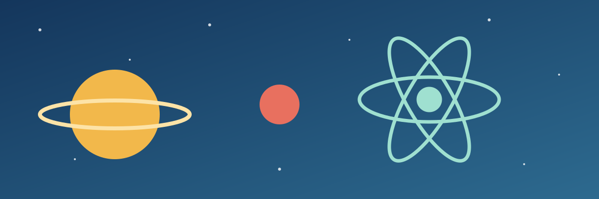

Astronomi
Natë me teleskopë në oborrin e universitetit
–
Detajet për Natë me teleskopëProgramimi në WWW · Java IV

Astronomi
–
Detajet për Natë me teleskopëKimi
–
Detajet për Eksperimente me ngjyraRobotikë
–
Detajet për Ndërto robotin tëndBiologji
–
Detajet për Mikrobiologjia e përditshmeFizikë
–
Detajet për Elektromagnetizmi në praktikëInformatikë
–
Detajet për Hackathon i shkurtërFakulteti i Shkencave Matematike-Natyrore, Prishtinë. Hyrja falas.
Dy ditë me aktivitete praktike për nxënës, studentë dhe familje.